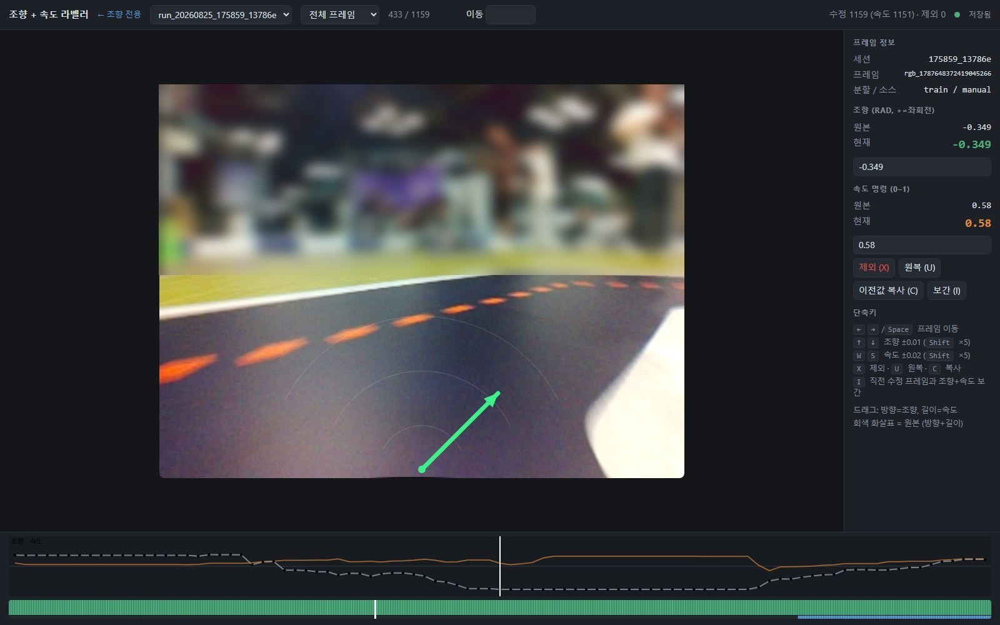

AMET 2026 Autonomous Driving Hackathon | 2 days nonstop | Top Excellence Award, 2nd place in the finals
Training data made by specifying the path on every frame of driving video
The low camera lost the lane in sharp curves, so we switched to an end-to-end model that learns steering directly from images. With no reliable steering values to train on, I built a web labeling tool and specified the direction and speed on each real driving frame. The videos below show those labels on the real frames.
End-to-end modelWeb labeling toolOn-device inference on Raspberry Pi 5Deployed to the team
Arrow direction = steeringTilting left means steering left, up to 0.35 rad.
Arrow length = speedShort before sharp curves and obstacles, long on straights.
Bottom plot = full sessionSteering over the whole session. Red bands mark obstacle sections.
The top of the frame is blurred to hide spectators and sponsor banners.
Labeling Tool and Simulator
I built an HTML tool that sets direction and speed in one drag, and the whole team used it from the middle of the competition. Before the event, lanes were auto-labeled in a simulator to pretrain the encoder.

Steering and speed labelerDrag direction sets steering, length sets speed, with shortcuts to copy and interpolate
Pre-competition simulatorMap lanes are projected into the image to generate labels